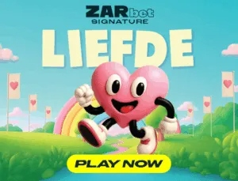

A romantic slot celebrating love in the Mother City with Table Mountain sunsets, protea wilds, and cascading multipliers.
Love is in the air — and on the reels. ZARbet's Signature series has already made waves in the South African online slots scene, and Liefde Spins is arguably the most charming title in their growing portfolio. Named after the Afrikaans word for "love," this romantic slot transports players to the heart of Cape Town, where Table Mountain sunsets paint the sky in shades of amber and rose, and the vineyards of Stellenbosch stretch out like a velvet carpet beneath the stars. It's a love letter to the Mother City, wrapped in a beautifully crafted 5x3 reel format that oozes quality from every pixel.
The first thing you'll notice is the adorable pink heart character mascot who serves as your guide through the game. This little character pops up during wins, bonus triggers, and idle animations with expressive reactions that add genuine personality to the experience. The symbol design is equally thoughtful — protea flowers serve as the premium symbols (South Africa's national flower, beautifully rendered in various stages of bloom), alongside love letters sealed with wax, diamond engagement rings, champagne flutes, and a Table Mountain silhouette against a fiery sunset. The low-paying symbols are elegantly designed playing card values wrapped in floral frames. Every visual element feels cohesive and intentional, a hallmark of ZARbet's Signature quality.
The colour palette is predominantly soft pinks, warm golds, and deep burgundies — romantic without being saccharine. The background shifts subtly between a daytime vineyard scene and an evening sunset panorama depending on the bonus mode, and ambient sounds of gentle Cape jazz and distant seagulls create an atmosphere that's genuinely relaxing. If Babalas Bonus is the rowdy Saturday night, Liefde Spins is the gentle Sunday morning that follows — and both are absolutely lekka in their own way.
Liefde Spins operates on a classic 5x3 reel grid with 25 fixed paylines. The bet range starts at just R1 and caps at R250, making it one of the most accessible Lekka Slots for players on any budget. While the maximum bet is lower than some other titles in the range, the 3,500x max win potential still means a top-stake spin can deliver a payout of R875,000 — more than enough to sweep anyone off their feet.
The medium volatility profile is perfectly suited to the game's romantic, laid-back personality. Wins land with comfortable regularity, and while you won't experience the stomach-dropping swings of a high-volatility monster like Isibaya Queens, the steady rhythm of returns keeps your bankroll healthy and your session long. The 96.5% RTP is among the best in the Lekka Slots collection, meaning the game returns slightly more to players over time than many of its peers.
Base game play is enhanced by the Heart Collection mechanic — a persistent feature that runs across your entire session and rewards loyal players with escalating bonuses. Small heart symbols appear randomly on any spin, and collecting them fills a meter that unlocks bonus rounds at set thresholds. It's a gentle but effective hook that gives every spin a secondary purpose beyond the immediate win potential.
| Reels | 5x3 |
|---|---|
| Paylines | 25 |
| RTP | 96.5% |
| Volatility | Medium |
| Min Bet | R1 |
| Max Bet | R250 |
| Max Win | 3,500x |
| Release | 2025 |
The Love Letter wild symbol is one of the most generous wilds you'll find in any SA-themed slot. When a Love Letter lands on reels 2, 3, or 4, it doesn't just substitute for other symbols — it expands to cover the entire reel. A single Love Letter wild can therefore create multiple winning combinations across several paylines simultaneously. On a lucky spin, you might land two or even three expanding wilds at once, effectively filling most of the visible reel area with wilds. The expansion animation is beautifully done too: the sealed letter unfurls, releasing a shower of rose petals that cascade down the reel as it transforms.
The Heart Collection is Liefde Spins' persistent progression mechanic. Small floating heart symbols appear randomly on any spin — they don't need to land on a payline or in any specific position, they simply appear overlaid on the reels. Each heart collected adds to your meter, which is displayed at the top of the screen. At 50 hearts, you trigger a mini bonus of 5 free spins with a 2x multiplier. At 100 hearts, you unlock a full Cape Winelands Free Spins round. At 200 hearts, you receive a guaranteed premium bonus with enhanced features. The collection persists across sessions at most casinos, so your progress is never lost. On average, you'll collect between 8 and 15 hearts per 100 spins, though hot streaks can see that rate climb significantly.
The Cape Winelands Free Spins is Liefde Spins' headline bonus feature and the reason many players keep coming back. Triggered by landing 3 or more love letter scatter symbols (or via the Heart Collection at 100 hearts), you're awarded 12 free spins set against a gorgeous vineyard backdrop. The key mechanic here is cascading wins with escalating multipliers — every winning combination causes the winning symbols to disappear and new ones to cascade in from above. Each consecutive cascade within a single spin increases the multiplier by 1x, with no upper limit during the round. String together 5 cascades in a single free spin and you're playing at 6x, which can deliver massive payouts when combined with expanding Love Letter wilds.
Landing exactly 2 scatter symbols triggers the Sunset Respins feature — a second-chance mechanic that gives you one additional spin where the 2 existing scatters are held in place and the remaining positions respin. If a third scatter lands during the respin, you trigger the full Cape Winelands Free Spins round. Even if it doesn't, any wins during the respin are paid at 2x the normal value. It's a small but appreciated feature that turns near-misses into something worthwhile and adds an extra layer of anticipation to every spin where 2 scatters appear.
The Cape Winelands Free Spins round deserves a deeper look because it's where Liefde Spins really shines. The cascading multiplier mechanic creates a snowball effect that can transform a modest free spins session into something spectacular. Here's how it plays out in practice:
Each of your 12 free spins starts at 1x multiplier. When you land a winning combination, those symbols vanish and new ones drop in. If the new symbols create another win, the multiplier jumps to 2x. Another cascade takes it to 3x, then 4x, and so on. The multiplier resets at the start of each new free spin, but here's the kicker — if an expanding Love Letter wild appears during the cascades, it stays locked for the remainder of that specific free spin's cascade chain. This means a single free spin with an early wild can generate 6, 7, or even 8 consecutive cascades with escalating multipliers, each one paying out with the wild still active.
The theoretical maximum from a single free spin is staggering, though in practice most sessions will see peak multipliers between 4x and 8x. Landing a retrigger (3 more scatters during free spins) awards an additional 5 free spins and adds a permanent +1 to all multipliers for the remainder of the round. Two retriggers push the starting multiplier to 3x, at which point even small cascade chains deliver substantial returns.
Pro Tip: The Heart Collection meter is your best friend in Liefde Spins. It fills slightly faster during the Cape Winelands Free Spins bonus (roughly 1.5x the base rate), so a long free spins session can significantly accelerate your progress toward the next Heart Collection threshold. Players who focus on maintaining consistent session lengths tend to hit the 100-heart and 200-heart milestones more efficiently than those who play in short bursts.
As a ZARbet Signature title, Liefde Spins is available at select South African online casinos that carry the ZARbet portfolio. Here are the best places to play:
Hollywoodbets features Liefde Spins in their Spina Zonke section alongside the full ZARbet catalogue. Their R25 free bet plus 50 free spins welcome offer is a perfect way to try the game risk-free. The Hollywoodbets mobile app provides an excellent experience for Liefde Spins' detailed graphics.
Betway carries all ZARbet Signature titles and pairs them with a R2,000 welcome bonus. Betway's platform handles the expanding wild animations smoothly, and their loyalty programme awards extra spins on featured titles throughout the month — Liefde Spins has been a regular selection.
Supabets added the ZARbet Signature collection recently, including Liefde Spins. Their R50 no-deposit free bet makes it easy to test the waters. If you enjoy this game, its sister ZARbet title Jack Parow Slots offers a completely different but equally polished experience — swap romance for high-energy rap vibes.
Liefde Spins is a beautifully crafted slot that proves South African themed games can be sophisticated and elegant, not just loud and party-focused. ZARbet's Signature quality is evident in every detail — from the expressive heart mascot to the cascading Cape Winelands Free Spins that can turn a quiet session into something truly spectacular. The medium volatility and generous RTP make it a safe choice for extended play, while the Heart Collection adds a persistent sense of progression that rewards loyalty.
If there's a criticism, it's that the 3,500x max win and R250 bet cap limit the ceiling for high-rollers looking for life-changing jackpots. For that kind of action, Isibaya Queens with its 8,000x max win and R1,000 bet cap is the better choice. But for players who value consistent returns, gorgeous presentation, and a relaxing yet engaging gameplay loop, Liefde Spins is hard to beat. It's the slot equivalent of a sundowner at Camps Bay — warm, golden, and absolutely worth your time.
More uniquely South African slot games you might enjoy.
Play uniquely South African slot games that celebrate our culture, our stories, and our spirit.
Find a Casino